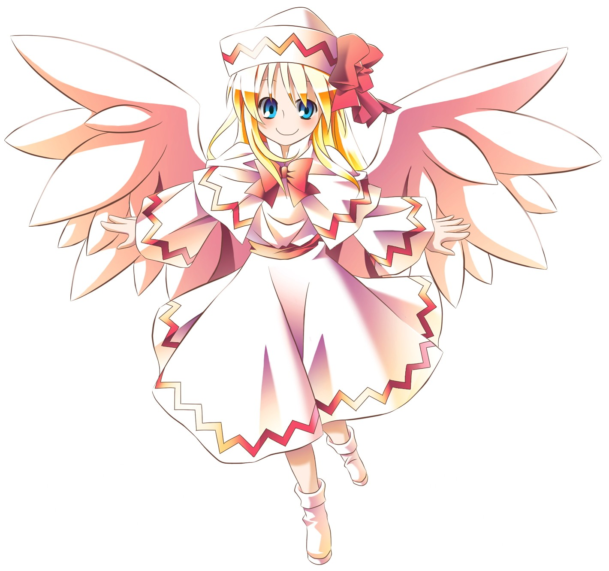
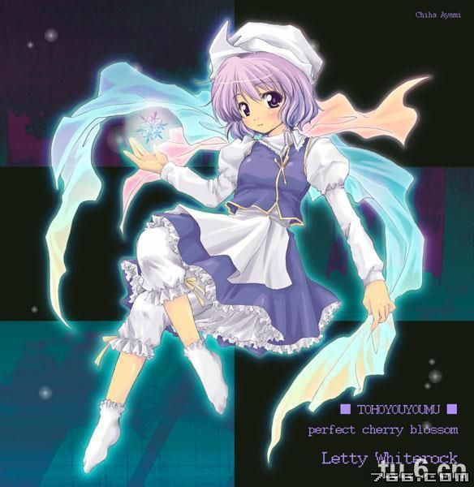
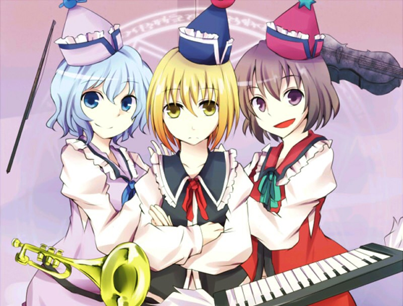
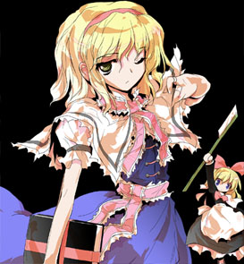
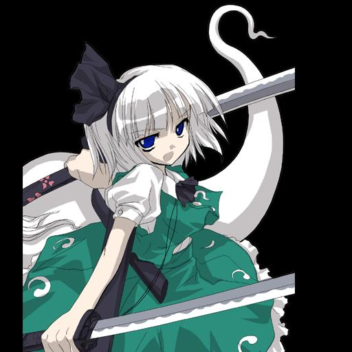
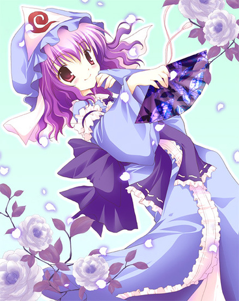
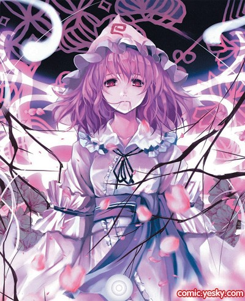
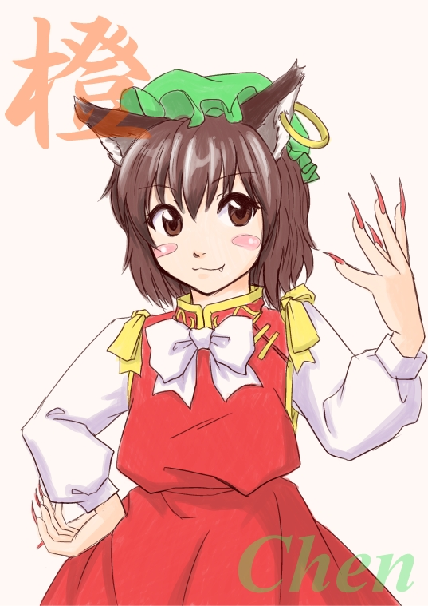
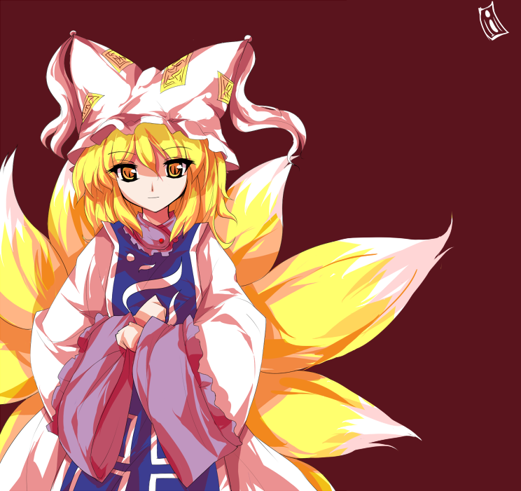
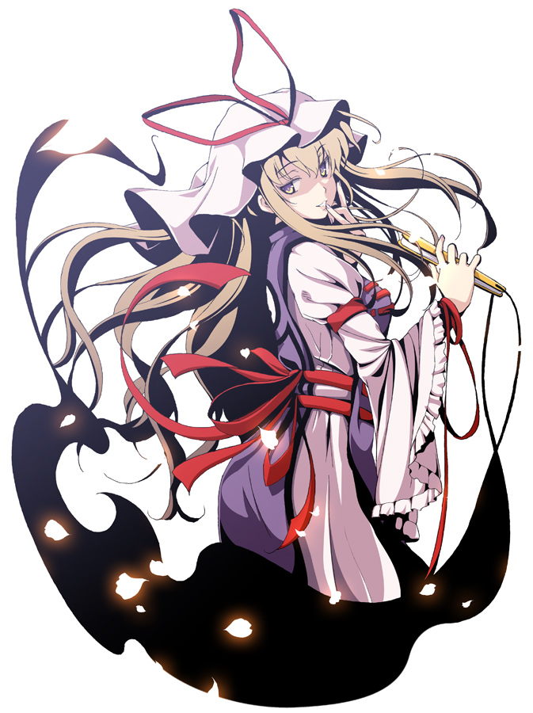

西行寺幽幽子某日在藏書中，讀到其上記載著那棵永不開花的櫻樹「西行妖」下，埋著一具屍骨。基於好奇想把那具屍骨復活，進而解開西行妖封印使其開花，然卻不知那屍骨就是她自己。為此要求庭師妖夢去搜集春。另一方面，因為春遲遲未來，靈夢、魔理沙和接到紅魔館命令的咲夜，三人出發尋找異變事端，最終追查到白玉樓的住人。事件結束後，幽幽子請她們去拜託八雲紫來修補被打破的冥界結界……
『東方妖妖夢』人物介紹

『莉莉白（Lilywhite）』 種族：妖精
常識上的告春妖精，當春天來到，就會好像想把此事告知給其他人般的興奮地出動，其表現方法是以彈幕來呈現(什麼鬼)，因此非常危險。

蕾迪•霍瓦特蘿克 (レティ・ホワイトロック，Letty Whiterock)
登場作品:『妖妖夢』第一關頭目『文花帖』LV.2
種族：妖怪
能力：操縱寒氣的能力
住處：不明 (所有當地季節為冬天的地方)
主題曲: クリスタライズシルバー（『妖妖夢』）
蕾迪是只能出現於冬季時的妖怪，在『求聞史紀』中被記述為雪女的一種。特徵是穿著不像是防寒的輕便衣服並頭上帶有三角形部分的帽子，和幽幽子的帽子上三角形部分區別(蕾蒂的沒有圖案，而幽幽子的有個螺旋形)，衣服上有Ψ形的圖案。在同人創作之中，有時候蕾迪和莉莉白(春季代表)以及秋姐妹(秋季代表)之間的關係經常演變成為了季節交替而鬧得勢不兩立、不肯退讓的情況。
在春天來臨之際時，蕾迪的身影會瞬間消失。直到下個冬天來臨之前都一直隱藏於涼快的地方。
二設同人之間，因為立繪圖及被彈面比較大的關係，所以有肥胖一說(甚至有時還被說成是橫綱級相撲手)。
騷靈三姊妹（プリズムリバー三姉妹，Sister Prismriver）
種族：騷靈
住在離霧之湖有段距離的廢棄洋樓。誕生由來要追溯到遙遠的過去。在當時，一位名叫普利森瑞柏伯爵的人類貴族有四個非常寵愛的女兒。然而一場不幸的事故奪去了伯爵的性命，從此無依無靠的四姊妹各自被迫離開這座屋子，然而四女蕾菈的回憶仍舊還留在這間屋裡。蕾菈以她最大極限的力量，用姊姊們的外表產生了三位騷靈之後，就隨著這間屋子與騷靈一起消失了。隨著時代變遷，四姊妹雖早已逝去，那間屋子卻仍然以騷靈館的模樣殘留在幻想鄉。而騷靈三姐妹們，如今也在這間屋子內過著嘈囃的生活。
騷靈三姊妹都擁有不用手足就演奏樂器的能力，吵架時是比誰發出的噪音最大（汗）
外號：虹川三姊妹、噪音、騷靈樂團

『露娜薩‧普利森瑞柏（Lunasa Prismriver）』
騷靈三姊妹中的大姊，非常討厭裝成優等生，若有要做的事就去做，有點陰沈，率直，容易被騙的性格。擅長演奏各種弦樂器，單獨演奏時，她的音樂會使人們感到情緒低落，是種圓潤、憂鬱的音色。身為騷靈三姐妹的大姐，同時也是“騷靈樂團”的團長，
個性本身向來就比較穩重，不過吵起架來也是十分凶悍的，據說是可以震碎玻璃的程度。
『梅露蘭‧普利森瑞柏（Merlin Prismriver）』
騷靈三姊妹中的次女，其魔力為三姊妹中最強，但使用方向錯誤。基本上是很明朗的性格，但也有點躁狂。擅長演奏各種管樂器，單獨演奏時，她的音樂會使人們感到情緒亢奮，甚至還有抓狂的危險。由於騷靈們本身能夠同時操縱多種樂器，所以騷靈樂團的音域其實很廣，能演奏的曲子也不少。
『莉莉卡‧普利森瑞柏（Lyrica Prismriver）』
騷靈三姊妹中的老么，既狡猾又得意忘形的人，平時教唆姊姊們去戰鬥，但自己卻不去幫忙，只想著坐享其成漁翁得利。擅長演奏各類打擊、鍵盤樂器。平常就是負責將姊姊們的聲音統合的工作，所以單獨演奏也沒什麼問題。她所擅長是屬於那種比較夢幻型的音色，換言之就是現世已經消失的音色。騷靈其實是可以讓樂器騰空飄浮著，而且無須觸碰也能發出聲音，不過大多時候還是習慣拿著。這能力對莉莉卡來說很方便。

『愛麗絲‧瑪格特羅伊德』 種族：魔女
總是拿著一本魔導書的少女，另一位居住於森林的魔法使，但和魔理沙不同，她的種族就是魔法使，來自魔界。喜歡收集魔法道具和製作魔法人偶，由於都是收藏家，和魔理沙經常發生衝突。不像魔理沙一樣會使用魔法之森的蘑菇。溫室派，通常都是關起門來搞研究，怡然自得地一人生活。擅長縫紉，手指是幻想鄉最靈巧的，為製作的魔法人偶以地名命名（上海、蓬萊、京都...），最常攜帶的是上海人偶，戰鬥時利用人偶來進行攻擊防御。
因為魔界之神‧神崎說過，魔界中所有東西都由她所創造，所以有她是神崎的女兒的說法。不過因為ZUN設定的愛麗絲「曾經是個人類，經過修練才變成妖怪」，因此把這個說法當成是二創就好了。
2012 年因 MMD 影像爆紅，獲得『網路偶像愛麗絲』稱號，少見地奪得年度東方人氣投票第2名（第1名是靈夢）。
能力：使用魔法，不受任何屬性牽制，萬能的魔法使
外號：七色人偶師、手辦女、自閉女、黑白正妻、傲嬌
『上海』：愛麗絲最常攜帶的人偶，外貌有許多版本，通常為金髮+紅色蝴蝶結+白色披肩和圍裙。

『魂魄 妖夢』 種族：半人半靈
西行寺家第二代專屬庭師（園丁）兼幽幽子的劍術指導。身邊總是會跟著一個像棉花糖的幽靈，那是她的幽靈部份。武器是可一刀斬殺十匹幽靈的長刀「樓觀」，和可斬斷人類心中迷惑的短刀「白樓」(不過平常都拿來修剪花木)。性格老實單純，常常受幽幽子的捉弄，由於白玉樓的院子非常的廣大(約兩百旬)，所以妖夢的腳力非常的好。年紀不滿六十歲。「半人半靈」是魂魄家特有的血統，介在半生半死之間，壽命較一般人類長，人身和半靈都是本體，兩者的感官似乎是連結在一起的(這點在二創中常被惡搞)。妖夢的半靈比一般的幽靈還要大上許多，溫度也較高些。對於入侵白玉樓者，不分是人是妖一律先斬了再說。
外號：綠白、園丁、庭師


『西行寺 幽幽子』種族：亡靈
白玉樓的亡靈大小姐。前世就有可以操縱人生死的能力，因厭惡自己的能力而在西行妖下自盡（使用某種蝶的毒），生前和八雲紫為友人，死後雖失去了前世記憶卻沒有忘記她。受映姬之託，管理待在白玉樓裡的幽靈。最初會給人天然呆的印象，接觸久了覺得這女人根本在裝呆，一般推測其父可能是「歌聖──西行法師」(1118~1190)。食量超大(雖然說幽靈不會餓)，二創中常被惡搞為大胃王，似乎跟她帽子上那個圈圈符號有關。
外號：幽靈、大胃王、無底洞

『橙』 種族：式神（貓又）
原本是在山裡棲息的妖怪貓，被八雲藍的凶神附身，從而成為她的式神(換言之她是紫的式神的式神)。性格像小孩一樣天真活潑，充滿好奇心，很喜歡跟主人藍撒嬌。冬天會在被爐旁蜷縮起來，非常怕水。特徵為綠帽紅衣和兩條尾巴。
外號：黑貓

『八雲 藍』 種族：妖獸（九尾狐）
紫的式神，在紫睡著的時間代替紫出外活動。擁有非常優異的數理能力，曾經因為無聊而計算出三途之川的河面寬度，據她所言，紫的計算能力更是遠遠勝於她。身為式神，被紫視作工具看待。其原型是九尾狐，本身就擁有強大的力量，以式神身分去執行指令時又會更強。喜歡吃油皮豆腐，可常看見她出沒於人里的豆腐店。頗照顧自己的式神‧橙，在二創中被昇華(？)為溺愛。幻想鄉第一
外號：暴露狂（她有張符的諧音和「素裸天狐」很像）、九尾、裸狐、蘿莉控

『八雲 紫』 種族：妖怪（賢者）
原型被懷疑是夜蜘蛛，一般認為是不屬任何類別的隙間妖。平常都待在她的隙間裡面，是個力量非常強大的妖怪。到了春天就覺醒。和靈夢同為結界管理者，個性捉摸不定，集詭異邪魅於一身，常打著洋傘和扇子做貴婦打扮。因為能力的便利性，時常會到現世去(或其他世界)，見識很廣。壽命非常長，至少知道在千年前就是大妖怪了。裝傻的功力不下於幽幽子，表面上唯恐天下不亂，其實比誰都愛著幻想鄉。和幽幽子很早前便是友人。
服裝主要有兩套，一套是全紫色的貴婦裝，還有一套是裙尾有陰陽符的類中國旗袍。
一天睡12個小時，除傍晚到半夜以外都不活動。冬天還要冬眠
外號：紫姨、紫奶奶、紫嬸、紫媽（由來為她那深不見底的年齡...不過請勿在同人界隨意說出口，否則將消失於隙間 w）、偷窺狂、隙間、永遠的17歲
最初我沒有很萌紫姨或是幽幽子,只是覺得魂魄妖夢的那個棉花糖很可愛 w
後來聽了VocalArrange,特別喜歡其中的一首歌"Phantasm Brigade"
歌詞應該是以紫的視角寫的... 對死去的幽幽子訴說的言語, 個人覺得非常感人
推薦以下這個MAD (已附中文歌詞字幕) 日文歌詞可以在這裡找到
【ネクロファンタジア 】VocalArrange －Phantasm Brigade－
歌詞所說的"あやかしの 本当(すべて)の力 全て(ここで)捧げるから"
應該就是指 幽幽子在西行妖下死去一事...
而那句"幻想郷(この世界) 終わらせてしまえ あなたが望むなら" 聽了 真是讓人鼻酸!
沒想到紫對幽幽子的感情深到這種地步...XD 就算是同人 我還是感動了
[ 推薦閱讀 ]
東方相關的文章目錄 - 2008